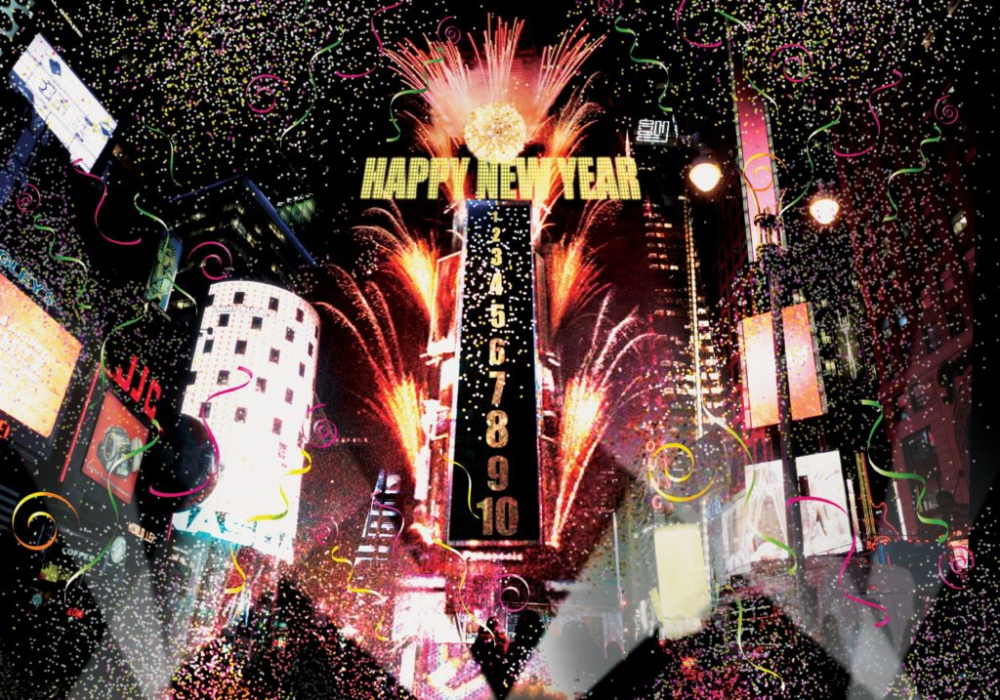

New Year's Eve Ball Drop

The New Year's Eve Ball Drop is one of the most overpopulated events in NYC. It takes place in Times Square and it's been a tradition since 1907. At 11:59PM on New Year's Eve, the timer begins as they countdown to the new year. At 12:00AM, confetti, lights and fireworks go off to celebrate the start of a new chapter. This event inlcudes perfomances and the thousands of people that attend to see the ball drop, as well as the millions that watch the event on their TVs. Performing on New Year's Eve in Times Square is an honor because everyone is watching. It's one of the most popular, free and anticipated events in NYC that everyone enjoys!
When:
It begins at 6:00PM on Monday, December 31, 2018
It ends at 12:15AM on Tuesday, January 1, 2019
Location:
The ball drops at One Times Square
The ball can be viewed on Broadway from 43rd to 50th Street
The ball can be viewed on 7th Ave from 43rd to 59th Street